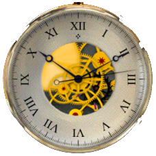

Help Contents
Print this page

Tombstone
Tombstone
is a skeleton watch. The balance wheel and some of the gears are animated. More is visible from the back. In Set mode you can drag two of the gears.
Help Contents
Print this page
<a href="../versionGen.html">Version</a>
Copyright Information